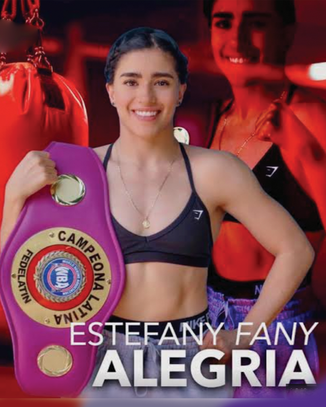

← Nuestros peleadores
Estefany Alegría · Fanny

Guadalajara, Jalisco · 15-1-0, 4 KO’s
Enamorada del boxeo por influencia de su hermano mayor, quien no logró debutar como profesional; encontró en el boxeo una disciplina, pero también una forma de vida que pronto la llevó a representar a Jalisco en Olimpiadas Nacionales y llegar a torneos internacionales representando a México; su andar en el terreno profesional estuvo repleto de grandes nombres y de victorias frente a oponentes de primera línea; el 2026 fue un año de ensueño para ‘Fanny’ pues en marzo se adjudicó el cinto Silver WBC de peso minimosca venciendo a Danna Paola Cid y en junio sacudió al mundo del boxeo al conquistar la corona unificada WBO, WBA e IBF en poder de la argentina Evelyn Bermúdez en duelo celebrado en Miami, Florida.